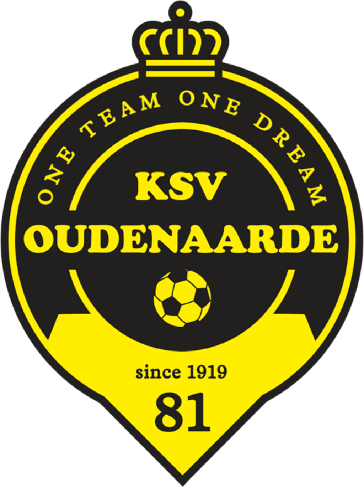

Φίλιππος Κουρέτας
Ταλέντο στο Βέλγικο Ποδόσφαιρο
Σχετικά με τον Φίλιππο
Το Ταξίδι του Ποδοσφαίρου
Ο Φίλιππος, ένας ταλαντούχος 12χρονος ποδοσφαιριστής με ελληνική καταγωγή, ξεκίνησε την πορεία του στο ποδόσφαιρο στην ηλικία των 5 ετών με την KWS Desselgem.
Εντυπωσιακό Βιογραφικό
Έχοντας περάσει έξι χρόνια με την Racing Waregem, ο Φίλιππος μεταγράφηκε φέτος στην KSV Oudenaarde U13, αναδεικνύοντας τις ικανότητές του.
Αναγνώριση στην Βαλένθια
Σε ένα ποδοσφαιρικό camp της Valencia CF, ο Ισπανός προπονητής Ignacio Pardo τον ξεχώρισε ως ένα από τα κορυφαία ταλέντα του camp.
Εθνική Αναγνώριση
Η συμμετοχή του στην U12 Vlaamse Selectie της Δυτικής Φλάνδρας ήταν ένα σημαντικό επίτευγμα. Ανάμεσα σε πάνω από 2.000 παιδιά, ο Φίλιππος μπήκε στην τελική ομάδα.

Επιστροφή στη Βαλένθια
Η επιστροφή στη Βαλένθια τον Ιανουάριο του 2026 ήταν κάτι πολύ περισσότερο από ένα ποδοσφαιρικό ταξίδι. Ήταν μια εμπειρία ζωής!
Μετά την κατάκτηση του βραβείου "Best Talent" στο καλοκαιρινό καμπ, ο Φίλιππος βρέθηκε ξανά στην Ισπανία, αυτή τη φορά για να ζήσει τον παλμό ενός μεγάλου ευρωπαϊκού αγώνα από μέσα.
🌟 Τα Highlights:
✅ Elite Προπόνηση: Συμμετείχε σε υψηλής έντασης προπονήσεις υπό την καθοδήγηση των προπονητών της Valencia C.F., κερδίζοντας νέες γνώσεις και πολύτιμη εμπειρία.
✅ Το Όνειρο: Η πιο μαγική στιγμή ήρθε κατά τη διάρκεια του αγώνα Βαλένθια - Εσπανιόλ. Ο Φίλιππος στάθηκε στο τούνελ των παικτών, ήρθε πρόσωπο με πρόσωπο με τα είδωλά του, αντάλλαξε χειραψίες με τους επαγγελματίες και περπάτησε στον αγωνιστικό χώρο του εμβληματικού Estadio Mestalla υπό το χειροκρότημα του κόσμου!
Η συγκέντρωση και η χαρά στα μάτια του τα λένε όλα. Συνεχίζουμε με σκληρή δουλειά και μεγάλα όνειρα! 💪
Στατιστικά & Δεξιότητες
Θέσεις & Δεξιότητες
Ο Φίλιππος διαπρέπει σε πολλές θέσεις, με κύρια την επίθεση. Η ικανότητά του να σκοράρει και να δημιουργεί ευκαιρίες τον καθιστούν πολύτιμο παίκτη.
Εξέλιξη Απόδοσης
Η απόδοσή του δείχνει σταθερή ανοδική πορεία, με συνεχή βελτίωση στις επιδόσεις του.
Φωτογραφίες & Βίντεο
U12 Vlaamse Selectie 2025

Ο Φίλιππος με την ομάδα της U12 Vlaamse Selectie, Απρίλιος 2025.
Φίλιππος με τη φανέλα της U12 Vlaamse Selectie, Απρίλιος 2025.
Ο Φίλιππος σε δράση με τη φανέλα της U12 Vlaamse Selectie.
Valencia CF Camp 2025

Ο Φίλιππος με το βραβείο του από το Valencia Camp.

Μια στιγμή χαράς με το βραβείο του.

Αναμνηστική φωτογραφία στο Valencia Camp, 18 Ιουλίου 2025.
Ανάρτηση στο Facebook
Βίντεο: Filippos won the talent award
Filippos at Mestalla stadium

Αναμνηστική φωτογραφία στο Mestalla.
Στον αγωνιστικό χώρο του Mestalla.

Μαζί με τους παίκτες της Valencia.

Στη γραμμή με τους επαγγελματίες.
Φίλιππος σε δράση με την KSV Oudenaarde 
Ο Φίλιππος σε μια στιγμή δράσης κατά τη διάρκεια ενός αγώνα.
Ο Φίλιππος με την μπάλα σε αγώνα.
Ο Φίλιππος τρέχει με την μπάλα.
Ο Φίλιππος κάνει ντρίμπλα με την μπάλα.
Ο Φίλιππος σουτάρει την μπάλα.

Πανηγυρίζοντας με την ομάδα.